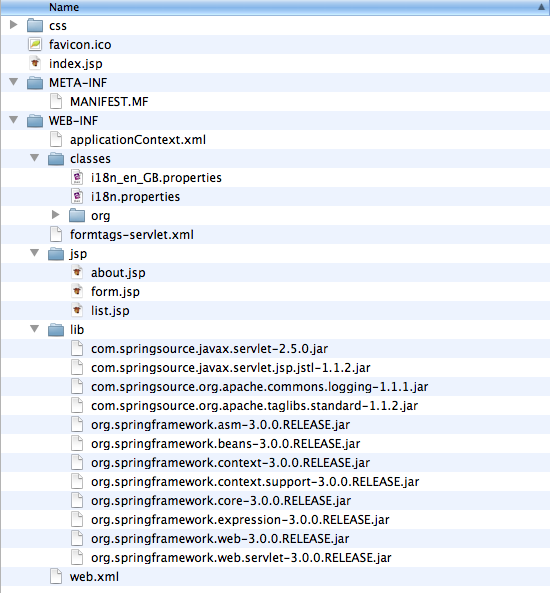
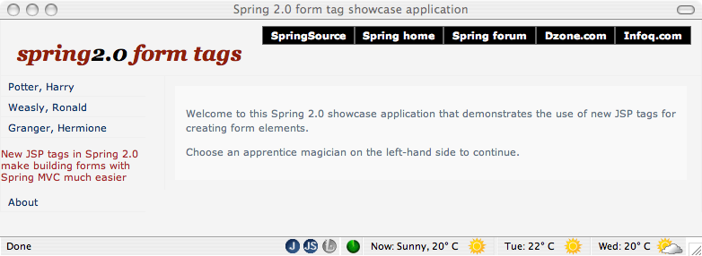

We begin with a standard WAR deployment.
The following screen shot displays the directory structure of the
Form Tags application using the standard WAR format. As you can see,
there is no deviation from the standard structure and layout, and as
you would expect, all of the web application’s third-party dependencies
(for example: Spring, Commons Logging) are packaged as JARs in
WEB-INF/lib.

To deploy this application, simply copy dist/formtags-war-3.0.0.*.war to
the SERVER_HOME/pickup directory for hot deployment.
You should then see the VTS produce console output similar to the following:
The console output has been reformatted to fit this document.
[2009-07-01 14:54:45.135] fs-watcher <SPDE0048I> Processing 'CREATED' event for file 'formtags-war-3.0.0.RELEASE.war'. [2009-07-01 14:54:45.797] fs-watcher <SPDE0010I> Deployment of 'formtags-war-3.0.0.RELEASE.war' version '0' completed. [2009-07-01 14:54:45.797] Thread-20 <SPWE0000I> Starting web bundle '/formtags-war-3.0.0.RELEASE'. [2009-07-01 14:54:46.380] Thread-20 <SPWE0001I> Started web bundle '/formtags-war-3.0.0.RELEASE'.
Navigate to http://localhost:8080/ plus the web application context path,
which in the above case is
formtags-war-3.0.0.RELEASE. Thus navigating to
http://localhost:8080/formtags-war-3.0.0.RELEASE
should render the sample application’s welcome page, as displayed in the screen
shot below.
.war extension. You can optionally
specify a context path using the Web-ContextPath bundle
manifest header, which will be described in further detail later.
